An Introduction to Remote Sensing
This chapter is an attempt to comprehend Remote Sensing. To reach a basic understanding so that it becomes a bit easier to understand future lectures and reading supporting material.
How does this work?
What are these bands?
Is this word a satellite or a sensor?
Terms
Below indicated are the images that schematically depict few terms.
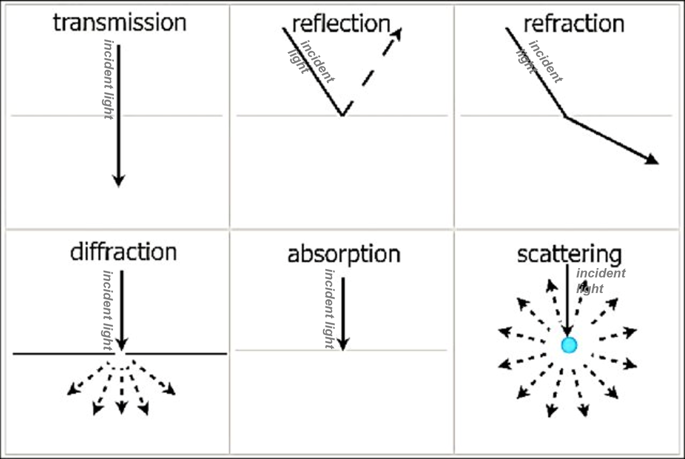
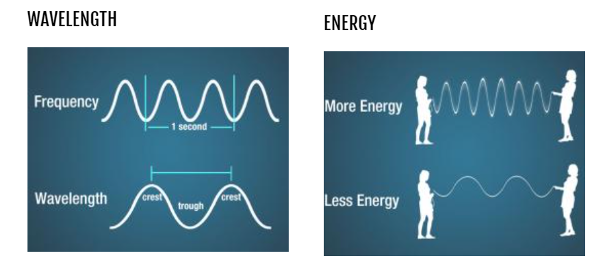
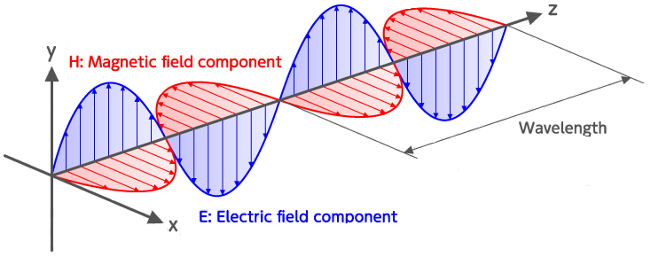
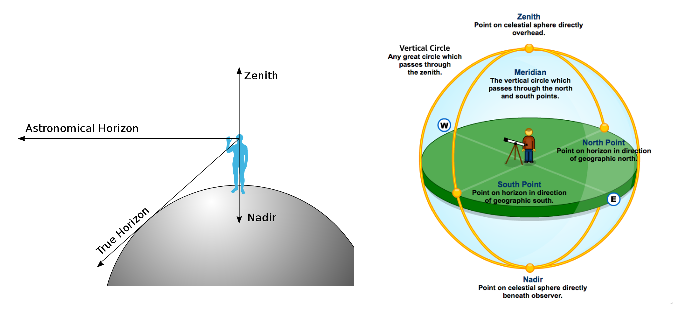
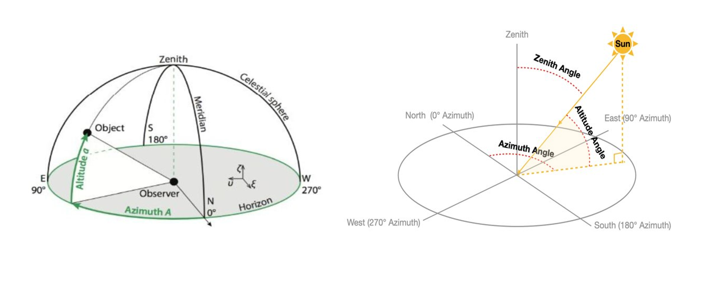
Remote Sensing Process
“Remote sensing combines science and technology to acquire information about an object, area, or phenomenon by measuring reflected and emitted radiation using a device that’s without direct physical contact (typically from satellite or aircraft)”
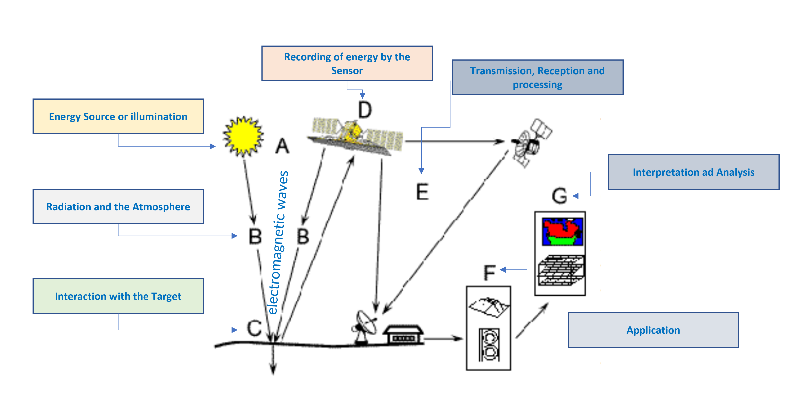
| Code | Interaction | Process |
|---|---|---|
| A | Energy Source or illumination | Energy form:
Energy source which
|
| B | Radiation and the Atmosphere | Energy and Atmosphere Interaction: 2 Energy Travelling pattern:
|
| C | Interaction with the Target | Energy and Target Interaction dependencies:
|
| D | Recording of energy by the Sensor | Target energy output:
Sensor location: Remote (not in contact with the target) Sensor role:
|
| E | Transmission, Reception and processing | Sensor role:
Receiving and processing station role:
|
| F | Interpretation and Analysis | Processed target Image:
|
| G | Application | Interpretation application
|
Electromagnetic Waves (EMW)
- Composition of oscillating electric and magnetic fields. (Maxwell’s equation)
- EM radiation transmission: can transmit in vacuum
- frequency, time period and wavelength= dependent on the producing source
- velocity= dependent on medium in which it is travelling
- high frequency of propagation= increase in accuracy
- light🌞 = visible part = colors (corresponding to different wavelength of light) eg: rainbow🌈
- Sound 🔊= invisible waves
- travels through molecules present in air (molecules bumping into each other)
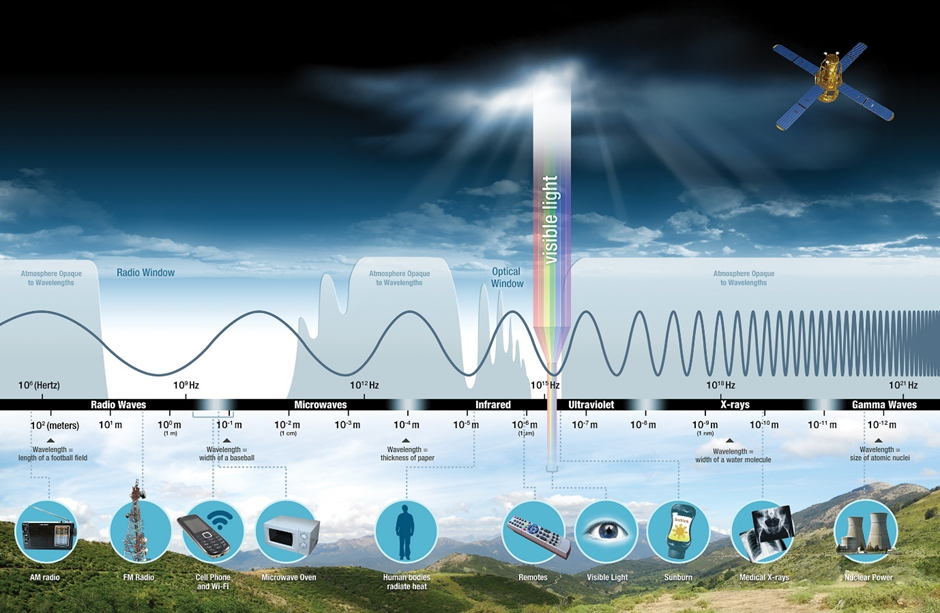
Longer wavelength = lower 🔽 energy = lower 🔽 frequency
Shorter wavelength = higher 🔼 energy = higher 🔼 frequency
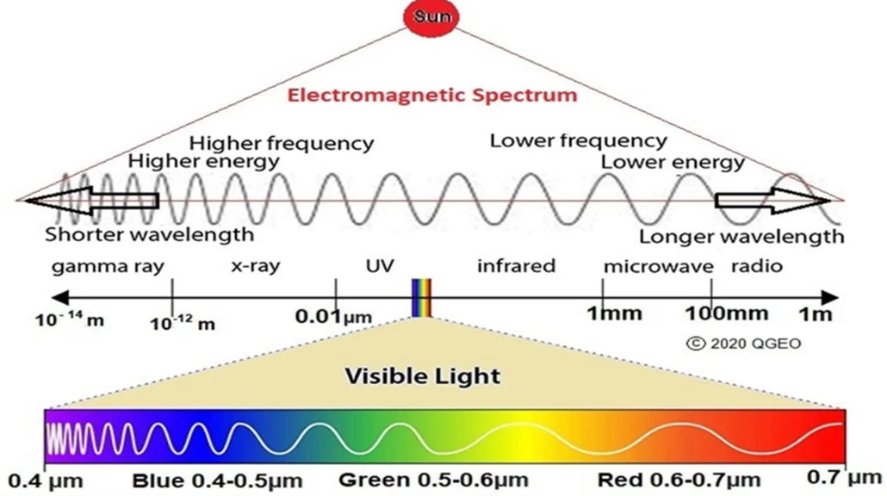
- Wonder How BIG are these waves ?? Image below indicates EMW Radio waves upto Gamma waves.
- Radio waves= very long (size of a building to the size of a coin)
- gamma-rays= very smaller (atomic nuclei)
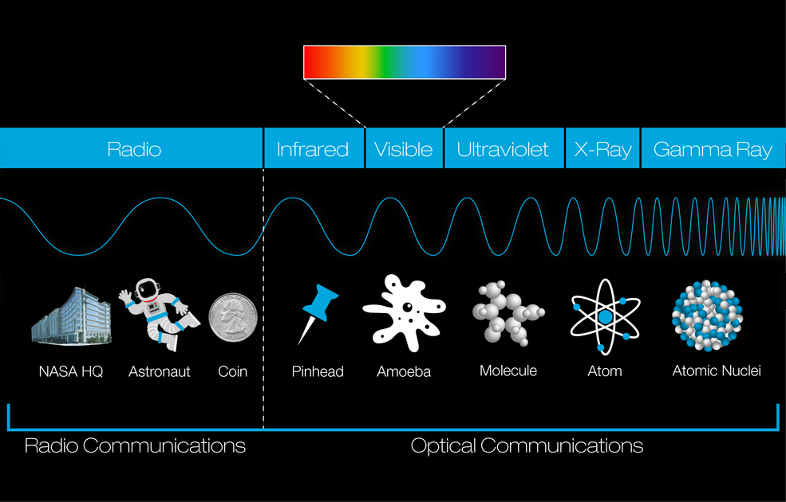
I see COLOUR? 👀
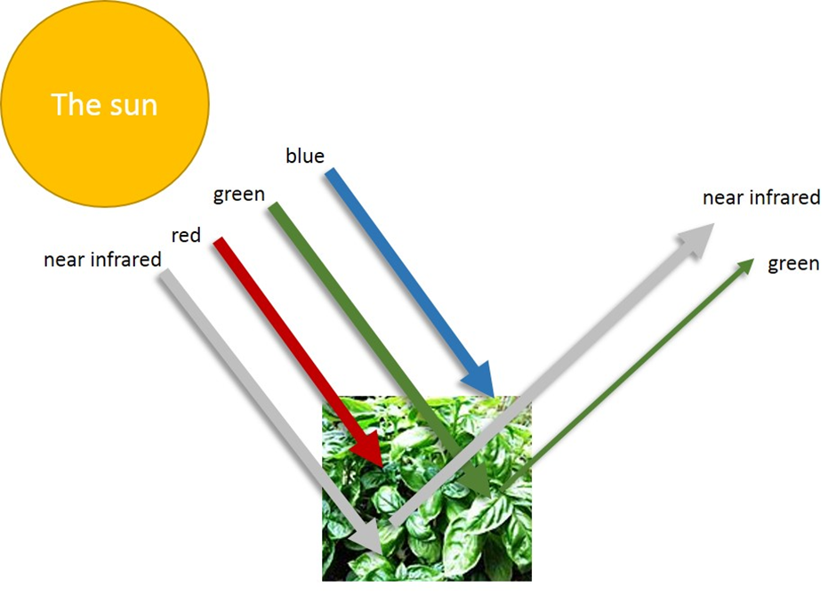
REFLECTED (Vegetation) = infrared light + infrared light= GREEN COLOR
- Geospatial data acquisition (Majority)= sensing (visible and infrared range)
- UV portion covers= shortest wavelengths (of practical use to earth observation)
- Application: some properties of minerals
- familiar application: UV rays used to detect forged bank notes
- Microwaves=larger wave length
- Application: information on surface roughness and moisture content of soils
- Green=0.54 μm (solar radiation maximum intensity)
- Red and beyond=IR (Infra-red)
- IR familiar application: night vision security cameras
Infrared
- Near-infrared (NIR)
- Mid-IR (SWIR- short-wave infrared)
- Thermal Infrared (TIR)
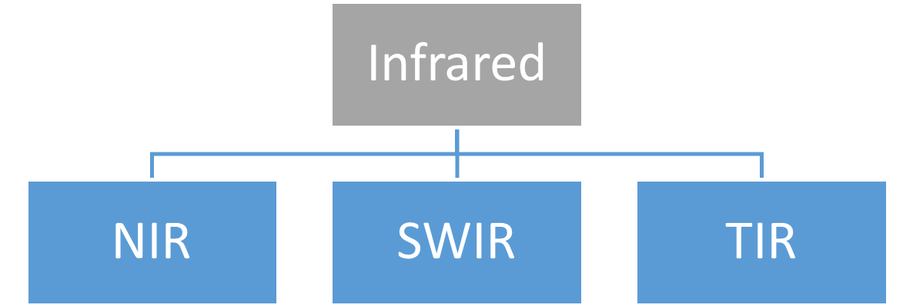
| NIR | SWIR | TIR |
|---|---|---|
To under stand this better lets take an example of deciduous forest NIR energy:
|
MID-IR aka SWIR
|
|
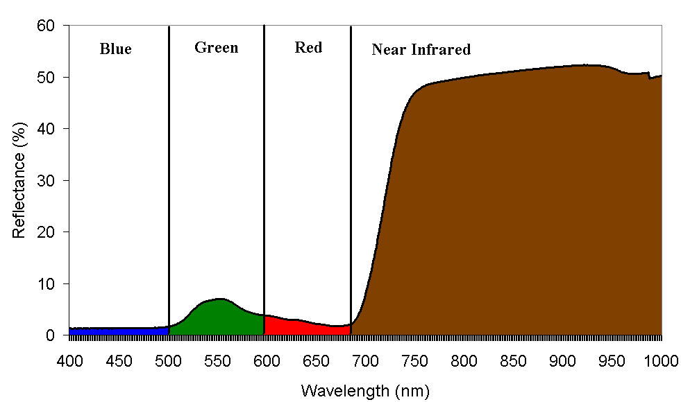
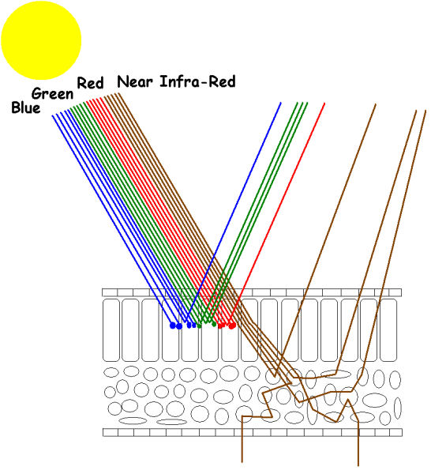
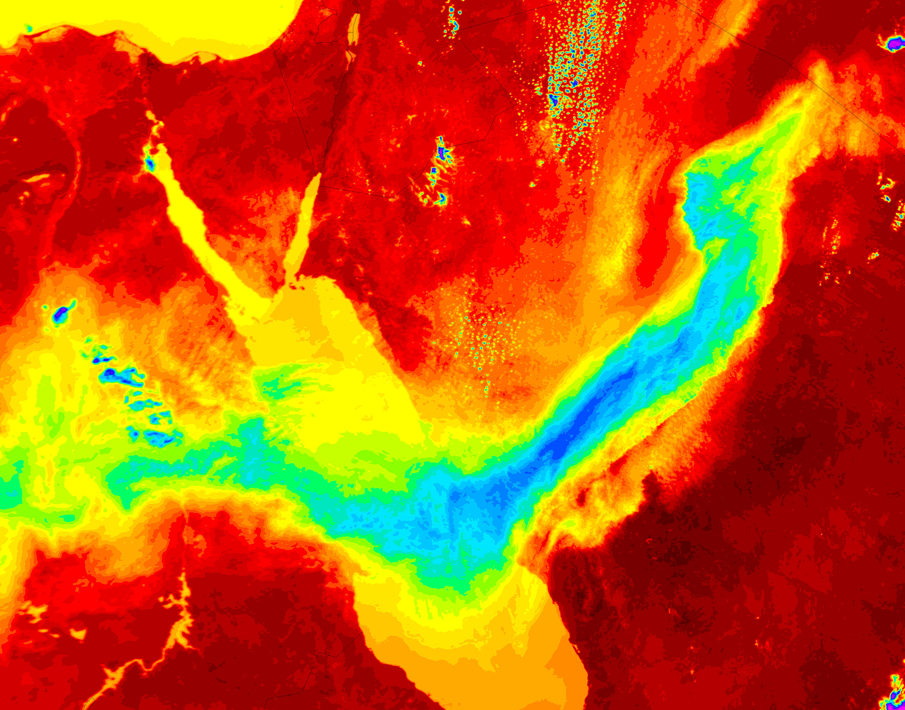
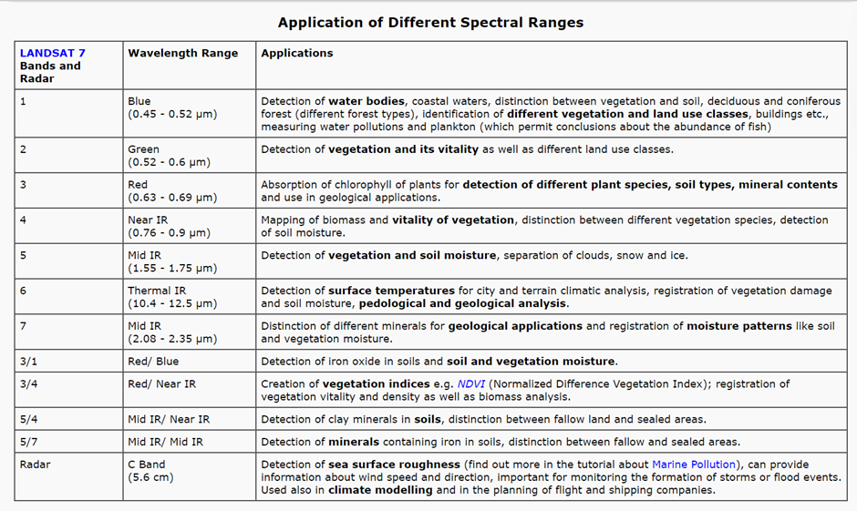
Spectral Reflectance Properties
So how do we see these characteristics of earth surface features or materials??
Spectral Reflectance Properties!! By analysing spectral reflectance patterns or spectral signatures. - Signatures can be visualised in spectral reflectance curves - curves= function of wavelengths - Eg: image below for water, soil and vegetation
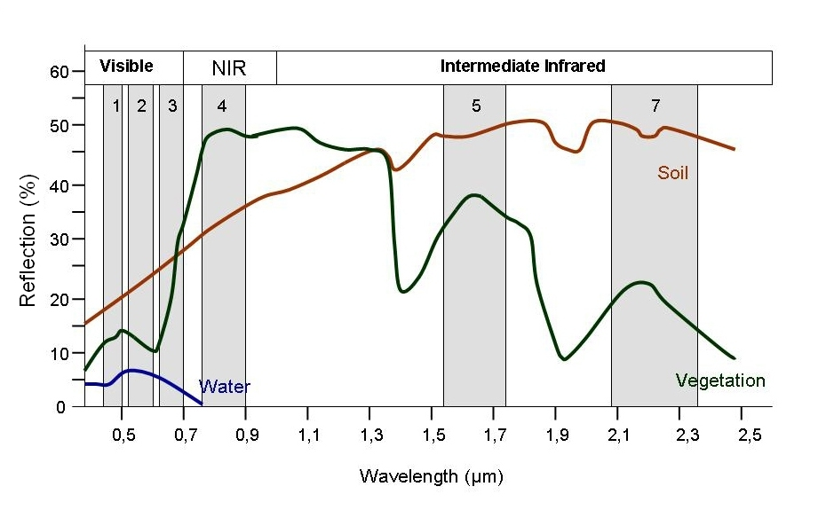
EMW Interaction
In above sections we have looked into what is EMW and few applications. this segment we shall look into how it interacts when it travels.
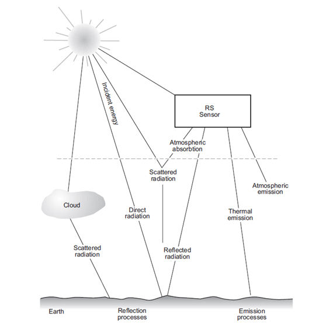
Atmosphere
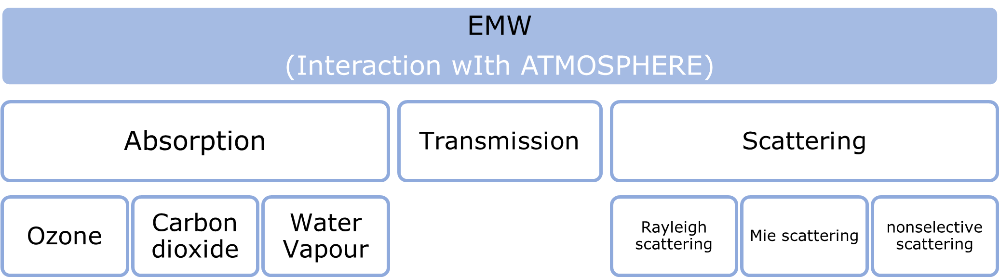
Absorption and Transmission
So let us look into the first two absorption and transmission
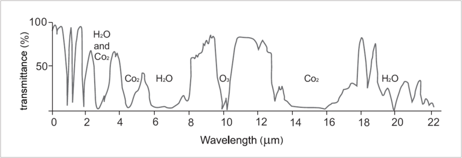
- Many wavelengths are not useful of RS of ES (none of the corresponding energy can penetrate the atmosphere)
- Spectrum portion outside the main absorption range= useful range
- Useful Range= Atmospheric Transmission Windows
- ONE window from 0.4 to 2 μm visible, NIR, SWIR remote sensors operating in this range are often referred to as optical ones
- THREE windows in the TIR range two narrow windows around 3 and 5 μm Third relatively broader approximately 8 to 14 μm
- Longer wavelength= strong absorption
- Range 22 μm to 1 mm
- Very low energy transmission
- Microwave range= transparent
- Range= beyond 1 mm
- Measure: solar radiation outside the atmosphere= resembles black-body radiation at 6000K
- Measure: Earth surface:
- Solar radiation at earth surface> spectral distribution of energy= very ragged
- Graph above:
- dip= atmospheric absorption by different gases
- energy>> earth surface= intensity reduction ? gas of increasing density.
Scattering
- Occurrence: passing from one medium (air,water etc) to another
- Light>>medium>>part light absorbed by medium>>
- Intensity of scattered light= size of particles + wavelength
- High scattering = short wavelength+high frequency (wavier= higher changes of collision with particles)
- Low scattering = longer wavelength+ low frequency (less wavier/ straighter in comparision= lower changes of collision with particles)
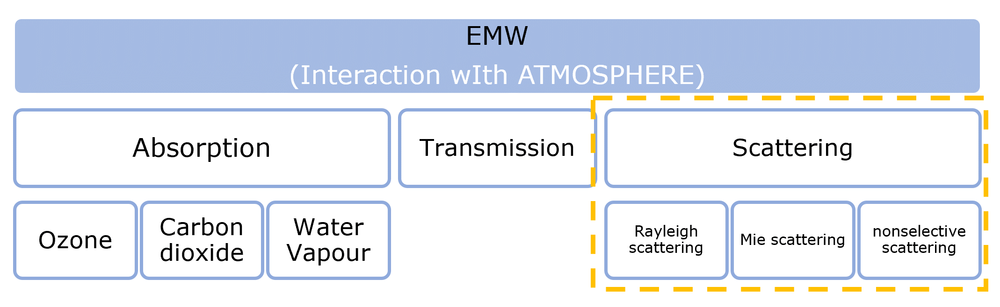
Factors:
- Wavelength of the radiation
- Amount of particles and gases
- Distance the radiant energy travels through the atmosphere


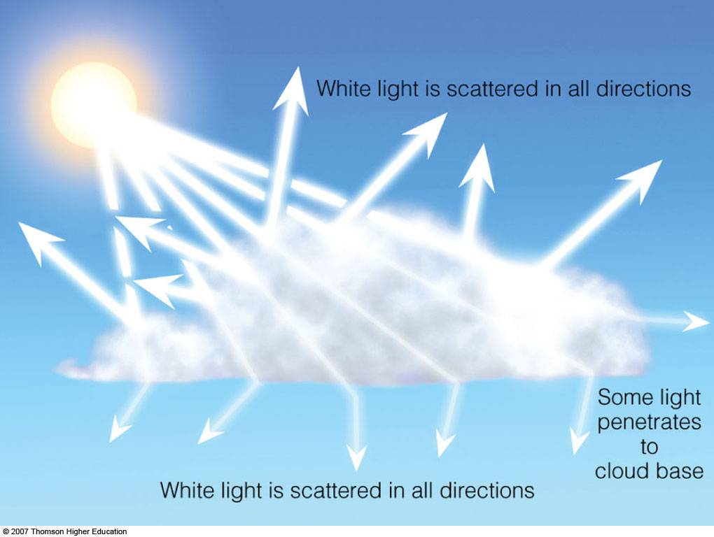
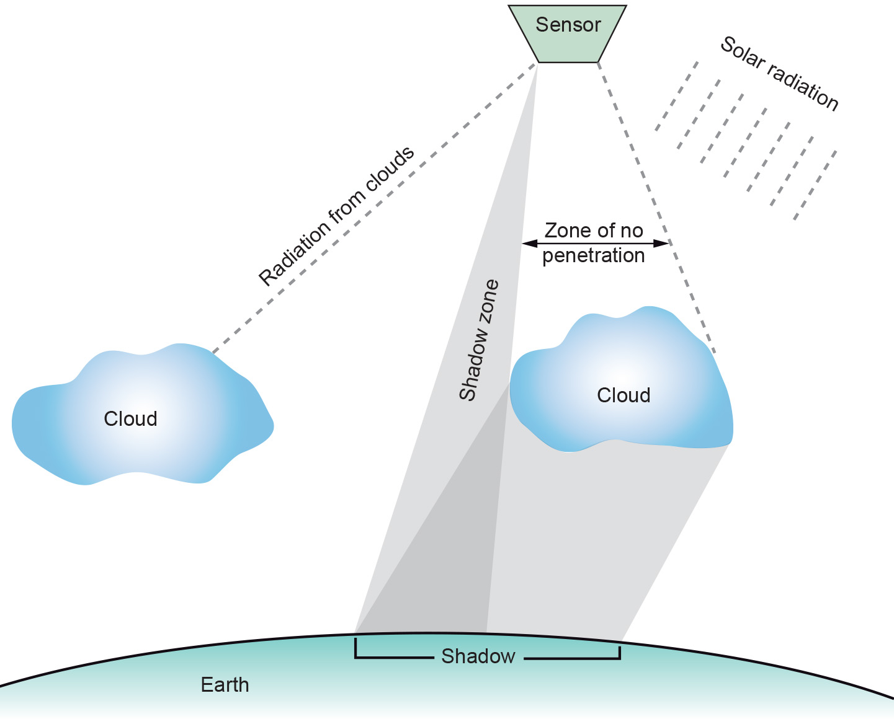
| Rayleigh Scattering | Mie Scattering | Nonselective scattering | |
|---|---|---|---|
| Particle size | Very small compared to wavelength (atmospheric particle size < incoming radiation wave length) 0.0001 μm to 0.001 μm |
Same as the wavelength of The radiation. (atmospheric particle size ~ incoming radiation wave length) 0.01 μm to 1.0 μm |
much larger than the radiation wavelength. (atmospheric particle size > incoming radiation wave length) 10 μm to 100 μm |
| Particles | Small specks of dust or nitrogen and oxygen molecules. | Dust, pollen, smoke and water vapour (larger particles) | water droplets and larger dust particle |
| Scattering result | Causes shorter wavelengths of energy to be scattered much more than longer wavelengths. | Affect longer wavelengths | independent of the wavelength within the optical range. |
| Location (dominant scattering mechanism) | Upper atmosphere | Lower portions of the atmosphere (dominates when cloud conditions are overcast) | |
| Effect on RS |
Negative effect on digital classification using data from multispectral sensors |
|
Clouds have a limiting effect on RS Eg: cloud cast |
| Example | Blue Sky, red sunset | dominates under overcast, cloudy conditions | clouds as white bodies |
| Wavelength | Blue (scattered more- shorter) | white light (scattered in all directions) |
|
| During the day |
|
||
| During sunrise and sunset |
|
Earth’s Surface

- The proportion of reflected - absorbed - transmitted energy will vary with wavelength and material type.
- Reflection depends: The surface roughness relative to the wavelength of the incident radiation.
- Angle of incidence is the surface roughness
Specular Reflection
|
Diffuse Reflection
|
|---|---|
|
|


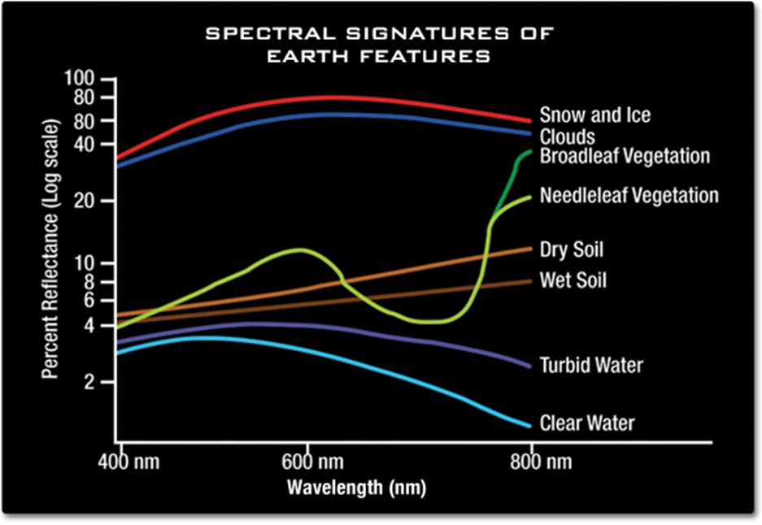
Reflectance Characteristics
| Vegetation | Bare SOIL | Water | |
|---|---|---|---|
| Depending factors |
Dependent factors
Application:
|
|
lower reflectance |
| Reflects |
|
|
|
| Incident energy Reflection | Vegetation may reflect up to 50% | soils up to 30–40% | water reflects at most 10% |
| Energy Absorbed |
|
|
Beyond 1.2 μm |
| Examples |
|
|
BRDF The Bidirectional Reflectance Distribution Function: It gives the reflectance of a target as a function of illumination geometry and viewing geometry. It depends on:
- Wavelength
- Determined by the structural and optical properties of the surface,
- shadow-casting, multiple scattering, mutual shadowing, transmission, reflection, absorption, and emission by surface elements, facet orientation distribution, and facet density.
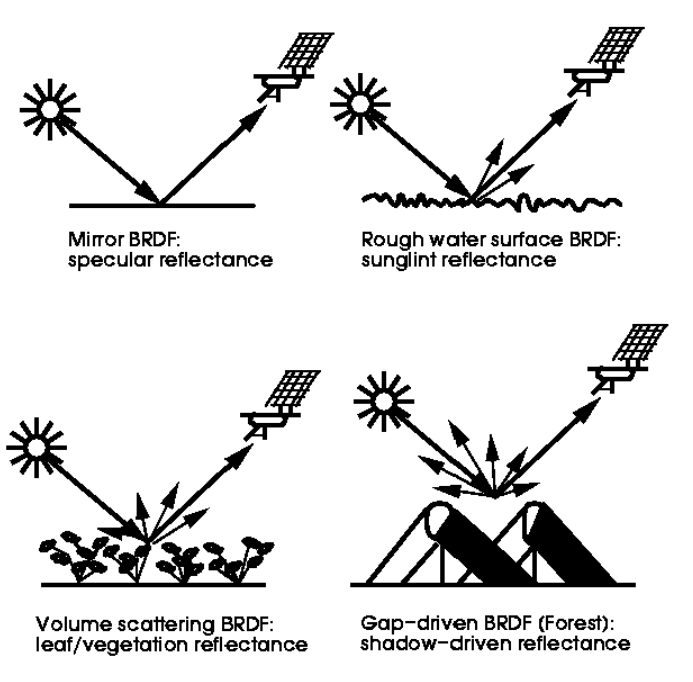
more: umb
Sensors
Remote sensor
- Device that detects EM energy
- Quantifies + records EM energy IN analogue or digital way
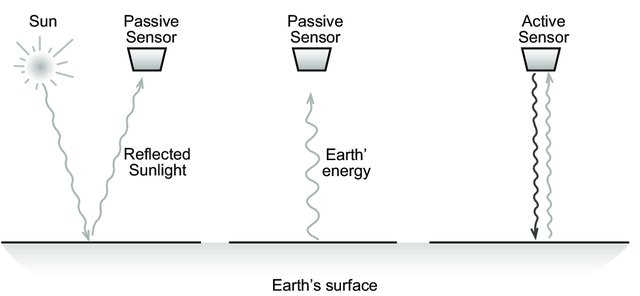
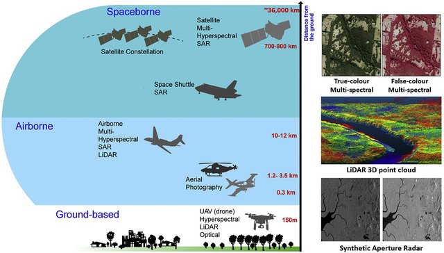
Image: Common Remote-Sensing Platform and Sensor Combinations and Remote-Sensing Data. (Left) Platforms and most commonly utilized sensors for specific platforms. (Right) True-color digital aerial photography and false color with NIR sensing (top), LiDAR point cloud of vegetation near a river (middle), and SAR data for two polarizations from Sentinel 1 (bottom).
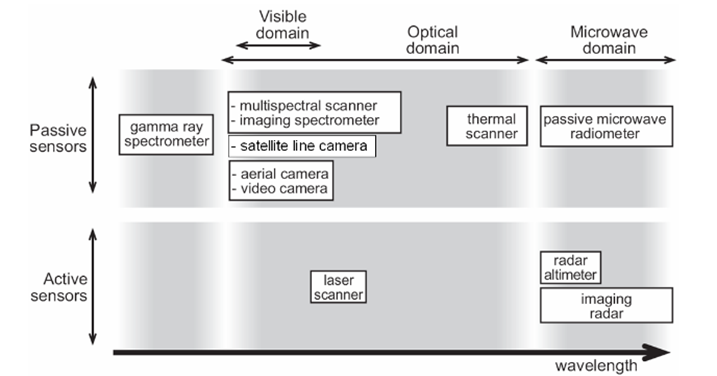
| Active | Passive |
|---|---|
| Use their own source of energy | Do not have their own source of energy |
| Independent of solar radiation | Sun/ solar energy , Earth heat emission or detect naturally occurring radiation |
Mostly works in microwave regions of EMR spectrum.
|
Record electromagnetic energy
|
| Can choose any radiation from EM spectrum | Detect reflected or emitted radiation: ultraviolet to the thermal infrared |
| an all weather, day-night system | It depends upon good weather conditions |
| It uses both transmitter and receiver units to produce imagery | Relatively simple both mechanically and electrically |
| requires high energy levels | does not have high power requirement |
| Relatively independent of atmospheric scatterings | |
RADAR signal
|
wavebands, where natural remittance or reflected levels are low high detector sensitivities and wide radiation collection apertures are necessary to obtain a reasonable signal level. most passive sensors are relatively wide band systems |
|
|
| Types: Laser altimeter, scanning electron microscopes, LiDAR, radar, GPS, x-ray, sonar, infrared and seismic (exist in both active and passive forms) | Devices Eg: Spectrometer, Radiometer, Spectroradiometer, Hyperspectral radiometer, Imaging radiometer, Sounder, Accelerometer |
| Mounted to a satellite, an airplane, a boat, building top or a submarine UAV drone | |
| Application: cartography to resource exploration to atmospheric and chemical measurements Application: agriculturalists and foresters, marine sciences and rescue missions, weather forecast etc. | |
Radar:
Lidar:
Laser Altimeter:
|
more on senors: earthdata
Active Sensors
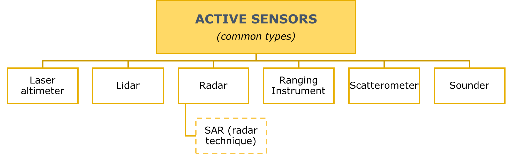
Spatial resolution of radar data~ ratio of the sensor wavelength to the length of the sensor’s antenna
- Meaning: for a given wavelength
- Longer antenna = higher spatial resolution
SAR
- Synthetic aperture radar (SAR)
- sensor produces its own energy
- active data collection
- can see through night, any weather condition
- wavelength: micorwaves
- A series of shorter antenna is combined to simulate a larger antenna
- Result: higher resolution

SOURCE: earthdata
- Radar sensors utilize longer wavelengths at the centimetre to meter scale
- Helps: ability to see through clouds
- Produces: fine-resolution images from a resolution-limited radar system
- radar movement: straight line
- carrier: airplane or NISAR
- NISAR
- provide multiple polarization modes across its two radar bands
- 24 cm wavelength L-SAR
- 10 cm wavelength S-SAR.
- How?
- transmits microwave signals>earth surface>receives back the signals (backscattered)> sensor makes an image from returned echoes- bat flying in cave
- Result imaginary built?
- Wavelength strength and time delay of the returned signal
- depends primarily on the
- roughness and electrical conducting properties of the observed surface
- its distance from the orbiting radar
- SAR has different wavelengths = bands
- Bands: X,C,L,P
- Important feature to consider
- Wavelength determines
- How far a signal can penetrate into the medium
- How the signal interacts with the surface
- To understand look at X an L bands below

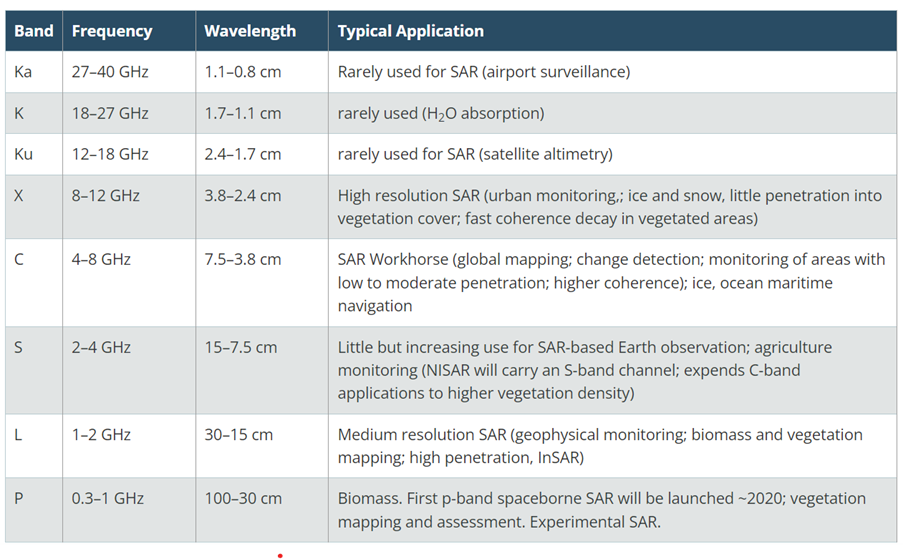

- Polarization: orientation of the plane in which the transmitted electromagnetic wave oscillates
- SAR=typically transmit linearly polarized
- Signal polarization can be precisely controlled on both transmit and receive
- Horizontal polarization = H
- Vertical polarization = V
- Signals
- polarizations carries information about the structure of the imaged surface
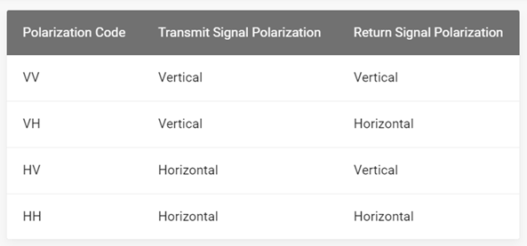

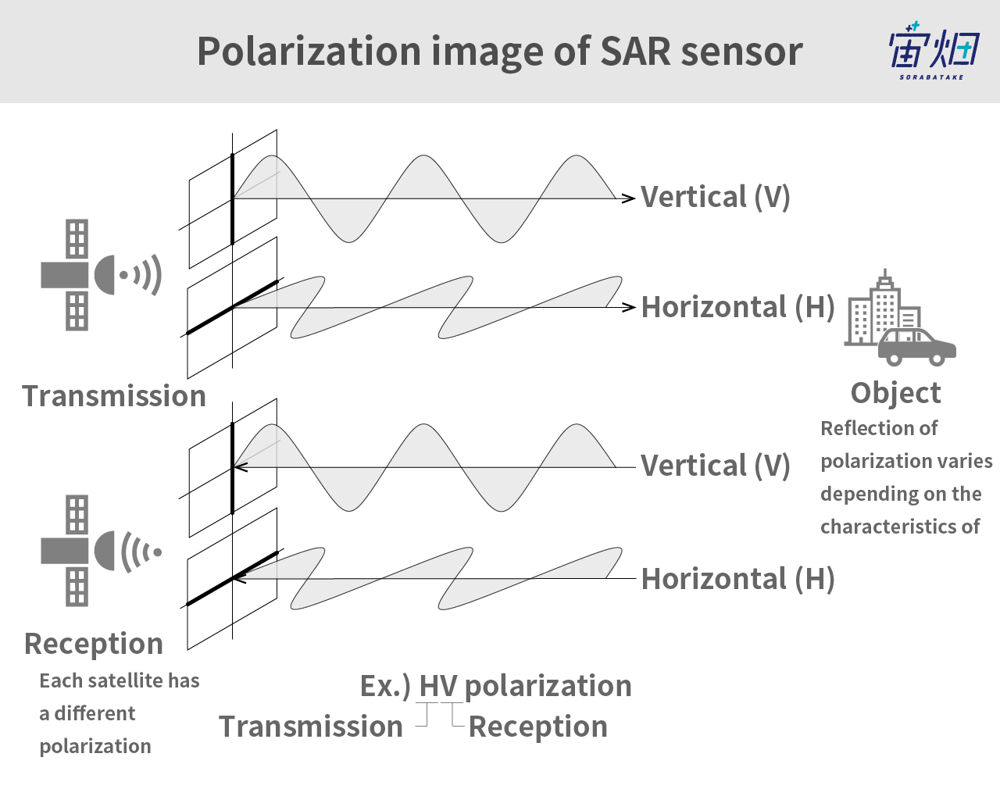
| Scattering | Surface | Emitted+ Recieved |
|---|---|---|
| Rough Surface scattering | bare soil or water | VV Scattering |
| Volume Scattering | leaves and branches in a forest canopy | VH or HV (cross-polarization) |
| Double bounce Scattering | buildings, tree trunks, or inundated vegetation | HH polarized |

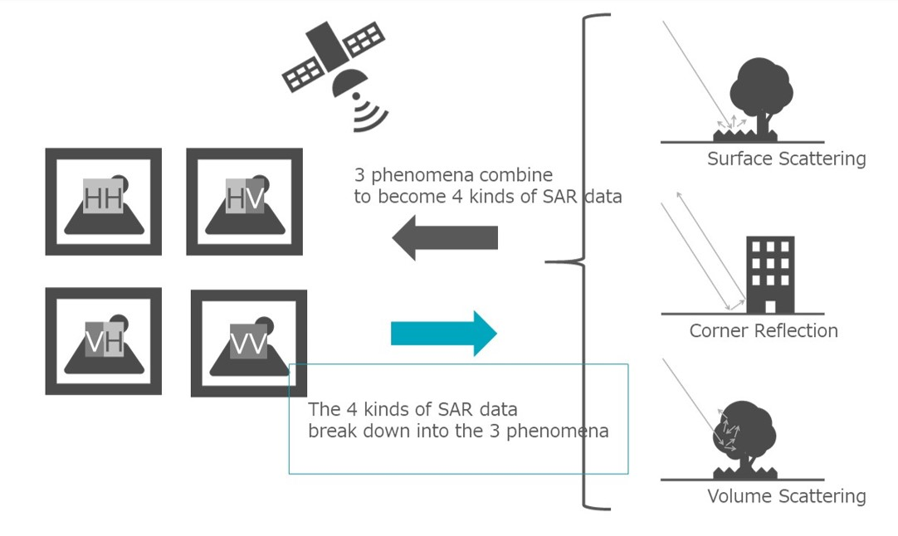
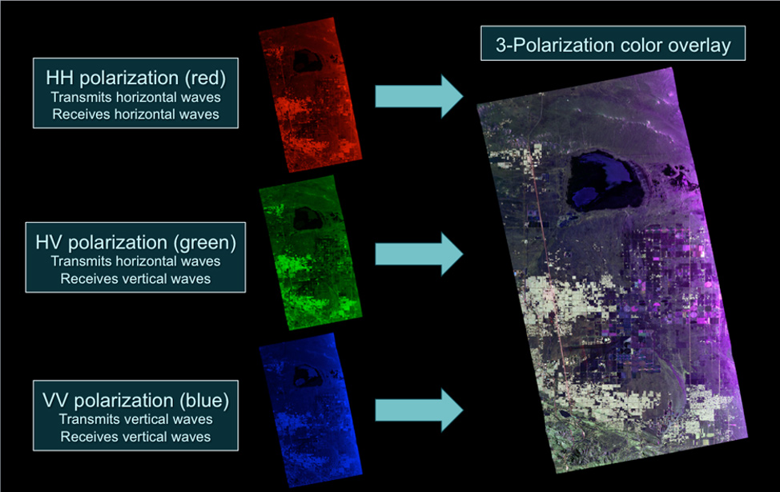
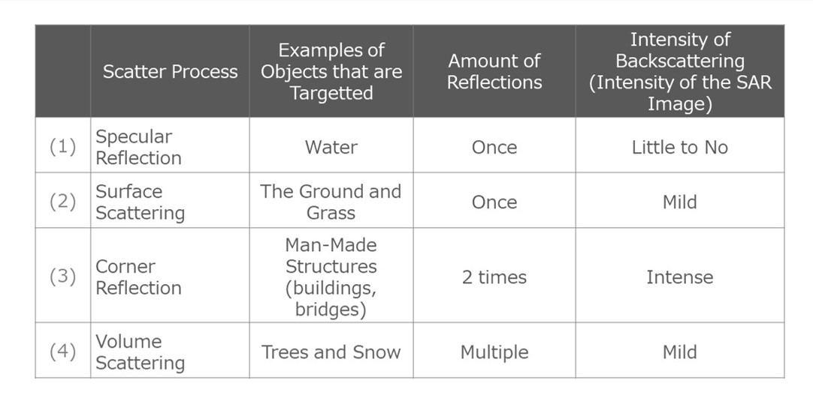
- Interferometry (InSAR) – analysis method
- Uses: uses the phase information recorded
- Measures: distance from the sensor to the target
- Measurement= very accurate
- to measure changes in land surface topography??
- Observations= Atleast 2 of the same target
- Sensor data= Distance + additional geometric information
- Application:
- identify areas of deformation from events like volcanic eruptions and earthquakes
- SAR data limitations:
- Tedious preprocessing steps (applying the orbit file, radiometric calibration, de-bursting, multilooking, speckle filtering, and terrain correction) earthdata
- Sensors: earthdata
- SAR distortion: alaska.edu
- SAR Hand book: ntrs
- Interferometry: nisar
- SweepSAR: nisar
Passive Sensors
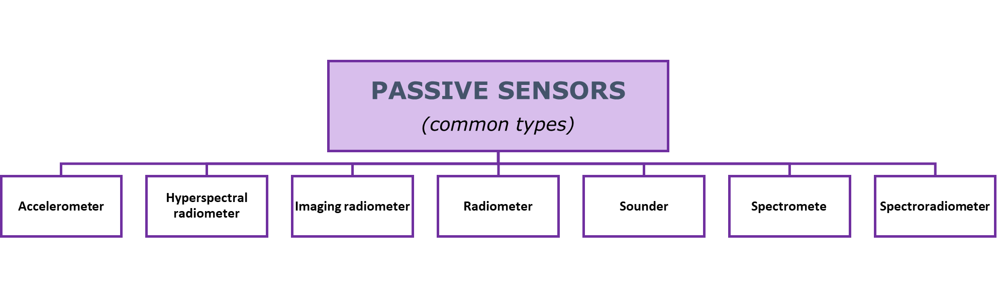
Data Format
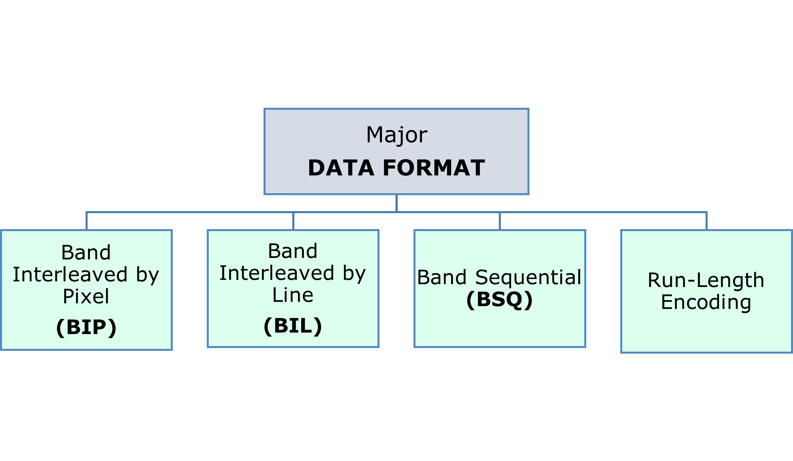

{kind=link}
other sources: gisgeography., e-education.psu, sar.kangwon
4 Resolutions
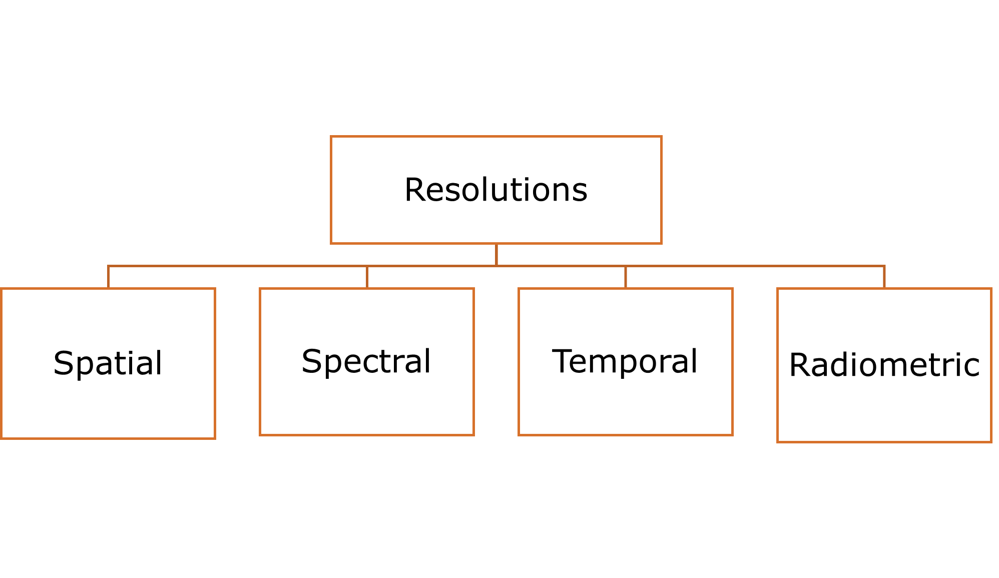
Spatial Resolution
| High Resolution Use | Medium Resolution Use | Low Resolution Use |
|---|---|---|
| Extreme precision | Not extreme precision | Lack of precision |
|
|
|
|
|
|
Source: eos